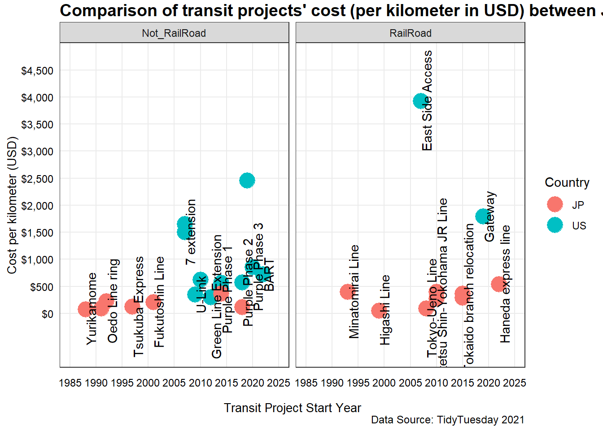

This week’s tidytuesday dataset explores the cost of transit projects for different countries of the world. The data is downloaded from the github repository.
# read in the data manually
transit_cost <- readr::read_csv('https://raw.githubusercontent.com/rfordatascience/tidytuesday/master/data/2021/2021-01-05/transit_cost.csv')Let’s look at the cost of transit projects in Japan (JP) and United States (US). Both of these countries are categorized as developed countries, but are located in different continent. The data vizualization is focused on answering, “How the transit projects’ costs differ in two developed countries (JP vs US) of the world?”
# transit projects of us and japan
us_jp <- transit_cost %>%
filter(country %in% c("JP", "US")) %>%
mutate(railroad = ifelse(rr == 1, "RailRoad", "Not_RailRoad")) %>%
group_by(country) %>%
mutate(avg_cost_per_km = mean(cost_km_millions))Both countries have almost similar number of projects (JP:15 vs. US: 13) in the dataset. To compare the cost of transit projects, the “cost per kilometer” variable is chosen. The cost per kilometer of each project is plotted against the start year of the project. Also, whether the transit project was a railroad or not is included in the plot.
us_jp %>% ggplot() +
# scatter plot of year vs cost per kilometer
geom_point(
aes(
x = start_year,
y = cost_km_millions,
color = country
),
size = 6
) +
# adding name of the project for each data point
geom_text(
aes(x=start_year, y = cost_km_millions, label = line),
nudge_x = 1,
nudge_y = 2,
angle = 90,
check_overlap = T
) +
# scaling x and y axis to accomodate the texts from names of projects
scale_y_continuous(limit = c(0, 4500), expand = c(0 , 1000, 0, 500), breaks = seq(0, 4500, by = 500), labels = scales::dollar_format()) +
scale_x_continuous(limit = c(1985, 2025),
breaks = seq(1985, 2025, by = 5)) +
# facetting the data for whether the project is railroad or not
facet_wrap(vars(railroad)) +
labs(
title = "Comparison of transit projects' cost (per kilometer in USD) between Japan and USA",
x = "Transit Project Start Year",
y = "Cost per kilometer (USD)",
color = "Country",
shape = "Railroad Project?",
caption = "Data Source: TidyTuesday 2021"
) + theme_gppr()
From the figure, it is quiet clear that Japan had more railroad transit projects than US. Also, the average cost of the transit projects for Japan is lower that US. The “East Side Access” railroad transit project was the cosliest one for US. The transit projects of Japan started much earlier than US. Note that, this insights is only from using this particular dataset, and may not be generalized.